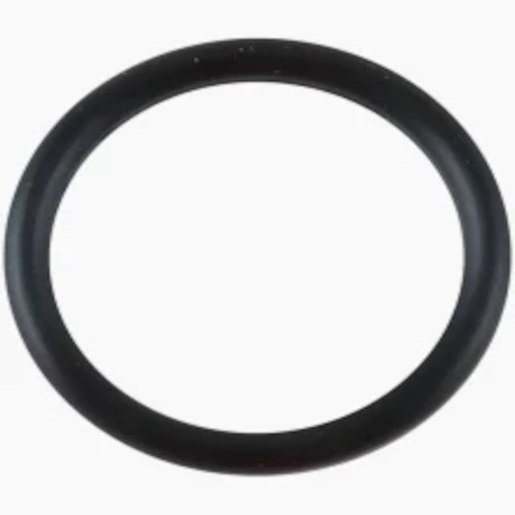
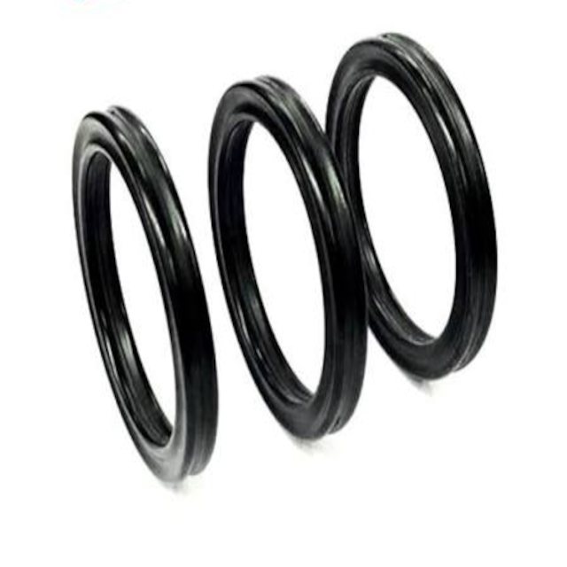
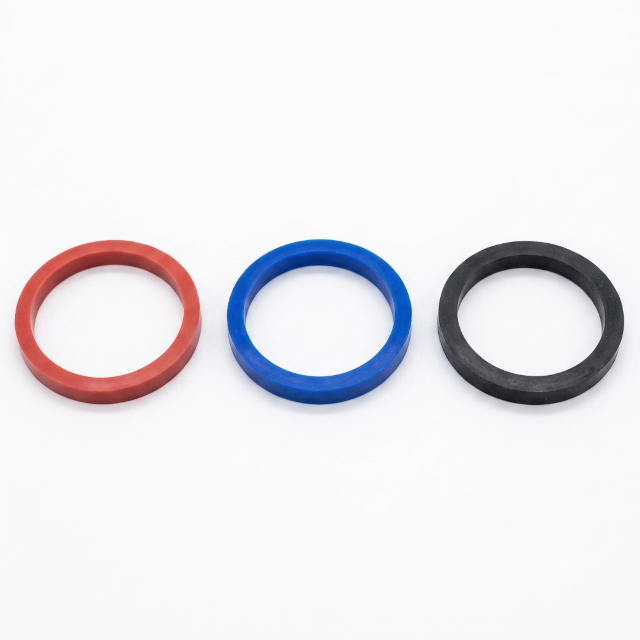

Anéis de Vedação
Soluções versáteis e de alta precisão estática e dinâmica para diversos segmentos industriais.
Variações Disponíveis

Anel O-Ring
Desenvolvido para vedação de sistemas hidráulicos e pneumáticos em aplicações estáticas ou dinâmicas.
Solicitar Cotação
Anel X-Ring (Quad-Ring)
Possui 4 lábios de vedação, proporcionando menor atrito e prevenindo a torção na canaleta.
Solicitar Cotação
Anel SMS / Sanitário
Especialmente projetado para acoplamentos nas indústrias alimentícia, química e farmacêutica.
Solicitar CotaçãoFicha Técnica Geral
| Especificação | Detalhes |
|---|---|
| Elastômeros / Materiais: | Nitrílica (NBR), Viton (FKM), Silicone (MVQ), EPDM, Neoprene (CR) e PTFE (Teflon). |
| Dureza Shore A: | De 60 a 90 Shore A. |
| Temperatura de Trabalho: | -40°C a +220°C (variando conforme o composto escolhido). |
| Pressão Suportada: | Até 400 bar (com utilização de anel anti-extrusão/backup). |
| Aplicações Típicas: | Hastes, êmbolos, conexões flangeadas, Válvulas, Bombas e Tubulações Sanitárias. |
| Normas Atendidas: | AS568, DIN 3771, ISO 3601 e SMS 1149. |